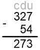

Los números reales tienen signo positivo +, o negativo -, dependiendo hacia
donde se dirigen sobre la recta numérica. Los números negativos se contabilizan del cero hacia la izquierda
o hacia arriba y los positivos
del cero hacia la derecha o hacia abajo. Para realizar operaciones entre cantidades positivas, negativas o
entre ambas, existen reglas claramente establecidas de manera que, al realizar cualquier operación entre dos
números independientemente de su signo, sea posible determinar, sin lugar a dudas, el signo resultante.
En el caso de los números positivos, el signo se omite, aunque se entiende que está presente todo el tiempo.
Sólo se escribe el signo cuando es negativo (-).
Valor Absoluto
Es el número que representa a una cantidad sin importar su signo o dirección. También se puede describir
como la distancia que hay entre el cero y el punto que representa a la cantidad sobre la recta numérica.
Relación de Orden
Signos de Agrupación
Los signos de agrupación se emplean para indicar que las cantidades encerradas dentro de ellos deben
considerarse como un todo, es decir, como una sola cantidad. Estos signos son: ( ), [
],
{ } .
Así, x+(y-z) equivale a x+(+y-z), operación que indica que la diferencia de y-z debe sumarse con x, y ya
sabemos que para efectuar esta suma escribimos a continuación de x las demás cantidades con su propio signo,
con lo que tendremos: x+(y-z)=x+y-z
Jerarquía de Operaciones
Es la jerarquía que se guarda entre operaciones distintas.
Ejemplo 01
Se resuelven primero las
raíces y
potencias
A continuación las
multiplicaciones y divisiones
Por último, sumas y restas
Siempre de izquierda a
derecha
Suma o Adición
Para esta operación, los elementos reciben el nombre de sumandos y al resultado como suma o adición. Esta
suma sólo se realiza si los signos de los sumandos son iguales:
En este ejemplo, ambos elementos son positivos. Tras efectuar la operación, el resultado será positivo.
En este caso, los números son negativos. Así que procedemos a sumar sus valores absolutos y el signo del
resultado será el mismo que el de los sumandos
Para sumar números de dos o más dígitos, los sumandos se ordenan en forma vertical para hacer
coincidir
las
unidades, decenas, centenas, etcétera, y se realiza la operación, columna por columna y de derecha a
izquierda.
El resultado de -479 -58 -147 es:
Al hacer coincidir las clases y sumar los valores absolutos, se obtiene -684.
Resta
Esta operación es inversa a la suma. Sus elementos son el minuendo, el sustraendo y la diferencia.
Cuando se restan 2 números enteros la diferencia lleva el signo del entero de mayor valor absoluto.
8-3
Se efectúa la operación y el resultado lleva el signo del número con mayor valor absoluto.
8-3=5
El resultado es 5
5-7
Se realiza la operación 5−7=-2, y al resultado se le antepone el signo negativo, debido a que el
número de mayor valor absoluto es negativo:
5−7=-2
El resultado es 5
Si los números son de dos o más dígitos, entonces se acomodan de manera vertical para que coincidan las
clases y se efectúan las operaciones, columna por columna, de derecha a izquierda:
327-54
Las cantidades se acomodan de manera vertical y el resultado lleva el mismo signo que 327, ya que es
el número de mayor valor absoluto.

Por consiguiente: 289 − 47 = 242
Multiplicación
Dado que la letra x se utiliza en álgebra, al igual que otras
letras para manejar variables, para evitar la confusión con el signo de multiplicación X, los signos
empleados para
este fin son • o los paréntesis.
El producto de dos números será positivo si ambas cantidades son positivas: (5)(8)=40
El producto de dos números será positivo si ambas cantidades son negativas: -5 •-8=40
Cuando solo una de las cantidades es negativa, el producto será negativo: (5)(-8)=-40 o -5•8=-40
En resumen, si los signos de ambas cantidades son iguales, el resultado será positivo. Si los signos de
ambas cantidades son distintos, el resultado será negativo
División
El cociente de dos números será positivo si ambas cantidades son positivas:
El cociente de dos números será positivo si ambas cantidades son negativas:
En resumen, si los signos de ambas cantidades son iguales, el resultado será positivo.
Si los signos de ambas cantidades son distintos, el resultado será negativo
Descomposición de números en factores primos
Un número primo sólo es diisible entre sí mismo y la unidad.
(Matemáticas Simplificadas. pág. 36)
Para obtener los primeros n números primos de los números naturales se puede utilizar la criba de
Eratóstenes, la cual consiste en hacer una tabla con los números del 1 hasta n.
Da clic sobre la imagen para verla en grande
Mínimo Común Múltiplo (mcm)
El mínimo común múltiplo es el menor de todos los múltiplos comunes de 2 o más números.
Para ejemplificarlo, usaremos las siguientes cantidades: 4, 5 y 6. Hacemos una lista de múltiplos para cada
una de las cantidades:
Para el 4: 4, 8, 12, 16, 20, 24, 28, 32, 36, 40, 44, 48, 52, 56, 60, 64, 68,...
Para el 5: 5, 10, 15, 20, 25, 30, 35, 40, 45, 50, 55, 60, 65,
70, 75, 80,....
Para el 6: 6, 12, 18, 24, 30, 36, 42, 48, 54, 60, 66, 72,.....
Es posible observar que, en cada una de las tablas de las tablas de múltiplos,
el
número 60 aparece en las tres. Hay que
tomar en cuenta que habrá más cantidades que coincidan si seguimos con la lista de múltiplos (el
120 por ejemplo) sin embargo, el 60 es el número
más pequeño que pertenece a las tres, por lo que es el mcm para 4,5 y 6.
La manera abreviada de encontrarlo se describe a continuación.
4, 5, 6 | 2
2, 5, 3 | 2
1, 5, 3 | 3
5, 1 | 5
1 |
Por lo que el MCM es : 2*2*3*5=60
Máximo Común Divisor (MCD)
El Máximo Común divisor de un número es el mayor de una serie de números que divide a dos números, o
más,
por
igual.
Para conseguirlo se dividen los números elegidos, en este caso 34, 36 y 42, entre el primer número primo
que
es
2. Se repite el proceso hasta que no sea posible seguir dividiendo entre 2 a niguno de ellos. Entonces
dividimos entre 3, que es el siguiente número primo. Y así hasta conseguir que los últimos números de la
serie descendente sean 1.
Para obtener el MCD, múltiplicamos a los dos números primos que intervienen en la división de todos los
números, en este caso 2*3=6, siendo este último el MCD. El siete no se toma en cuenta, puesto que sólo
divide al 21 y posteriormente al 7.